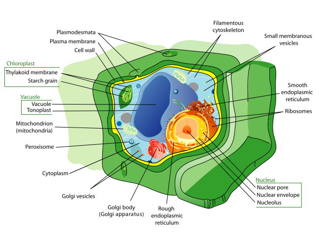

"The beautiful thing about learning is that no one can take it
away from you." -B.B. king-

Plant Cell vs Animal Cell
Plant and animal cells share many similarities since they are both
eukaryotes, which means that they have membrane-bound organelles like the nucleus and
mitochondria. They also both have cytoplasm, a cell membrane, a nucleus, mitochondria, a Golgi
apparatus, ....